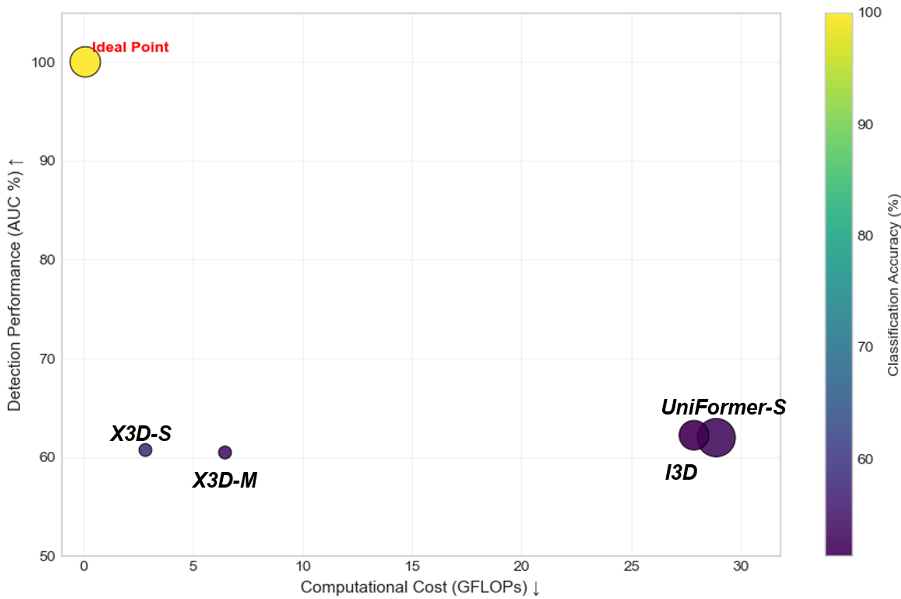

My research focuses on deep-learning architectures that model complex behavior in dynamic environments, balancing accuracy with computational efficiency.
Deep dive: TransLowNet
Efficiency in low light
Using X3D as backbone, we reduced false positives in night-time scenarios by 15% versus conventional models.

Graph-attention architecture
Graph Attention Networks capture relationships between multiple actors in the scene, improving violence-event detection.

Scientific publications
Peer-reviewed work in Computer Vision, anomaly detection and intelligent systems.
Custom dataset development
Curation of 500+ hours of video for anomaly detection in Mexican public transportation.
Sample 1
Sample 2
Sample 3